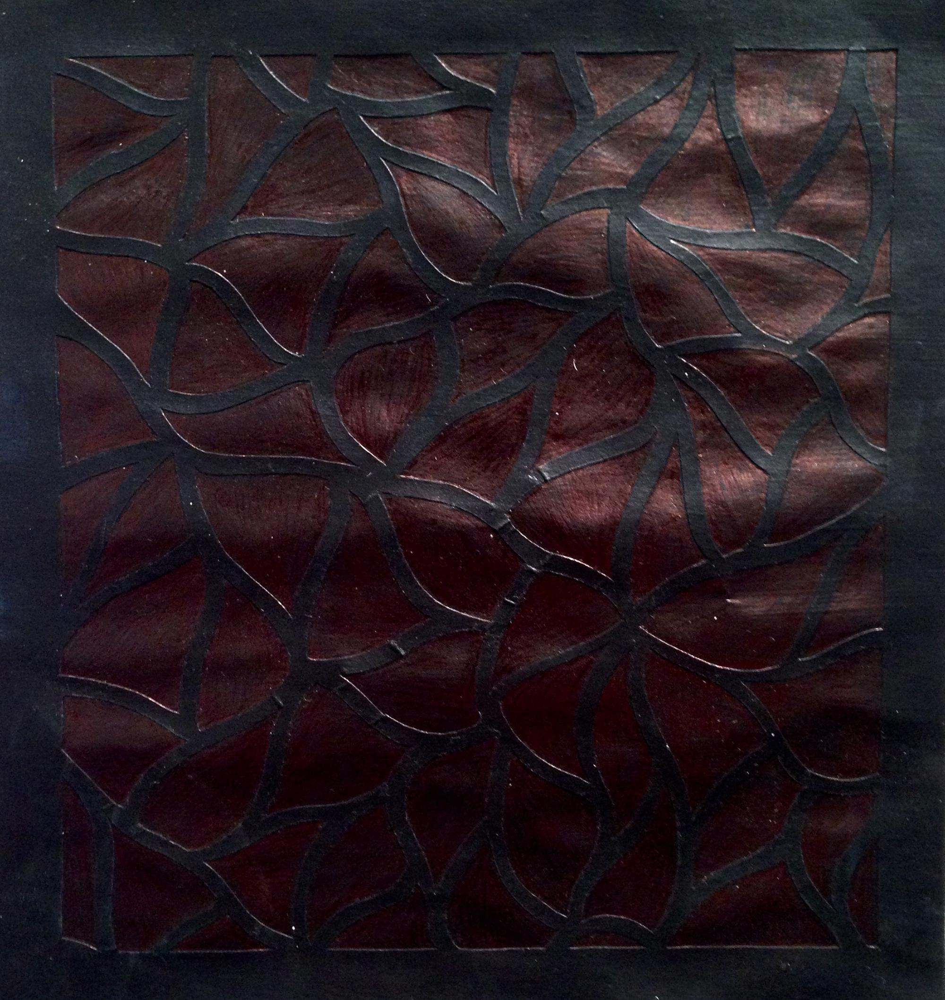
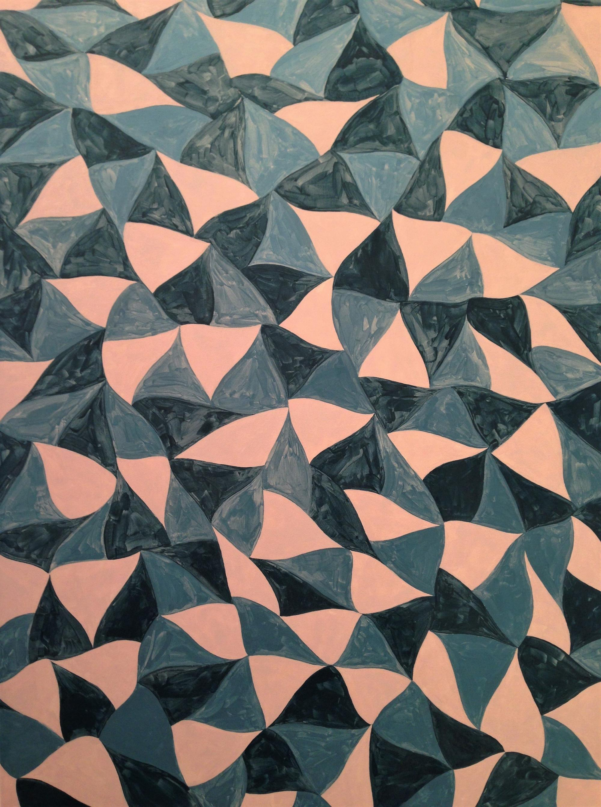
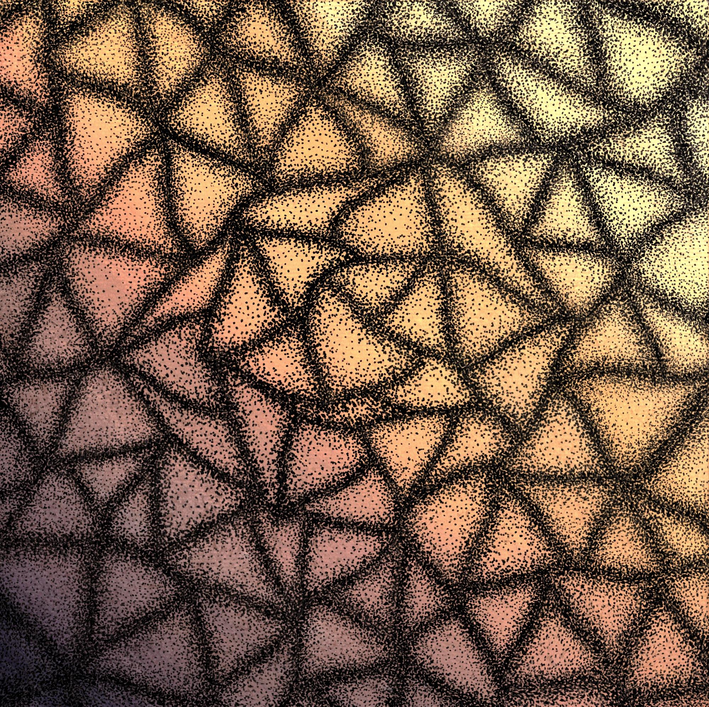
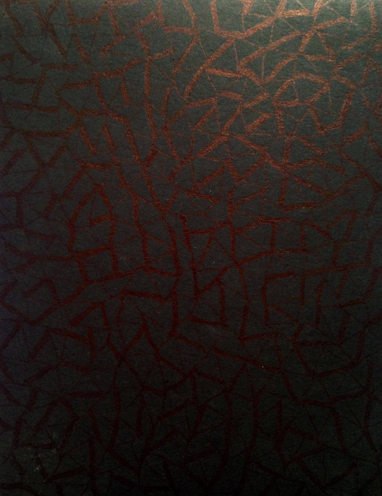
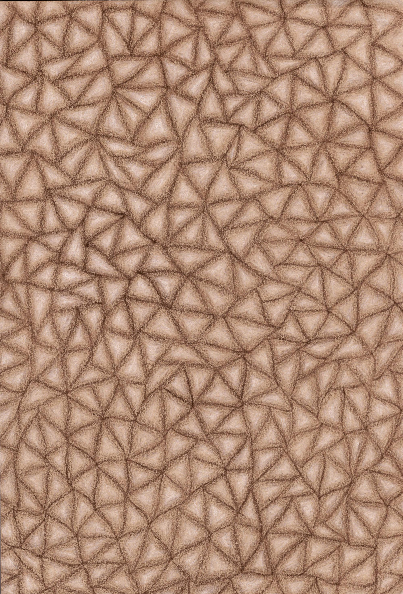

Biography
Sara Jenkins is an artist and a writer
She creates abstract work that sometimes incorporates realism.
She also writes creative nonfiction essays and poetry.
 Sara Jenkins received her BA in Art Studio and her second major in English from the University of New Mexico
She studied in the Honors College and was awarded the Toby Wright Scholarship and the Lottery Scholarship.
 For several years she's worked as a K-10 summer art teacher, instructing classes in drawing, jewelry, collage, sculpture, and painting.
Contact her at sarajenkinsart@gmail.com
